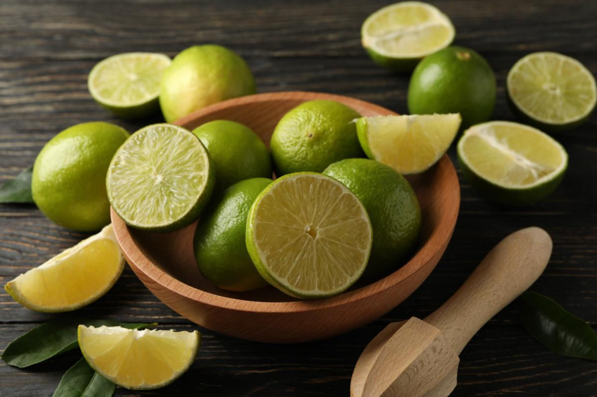
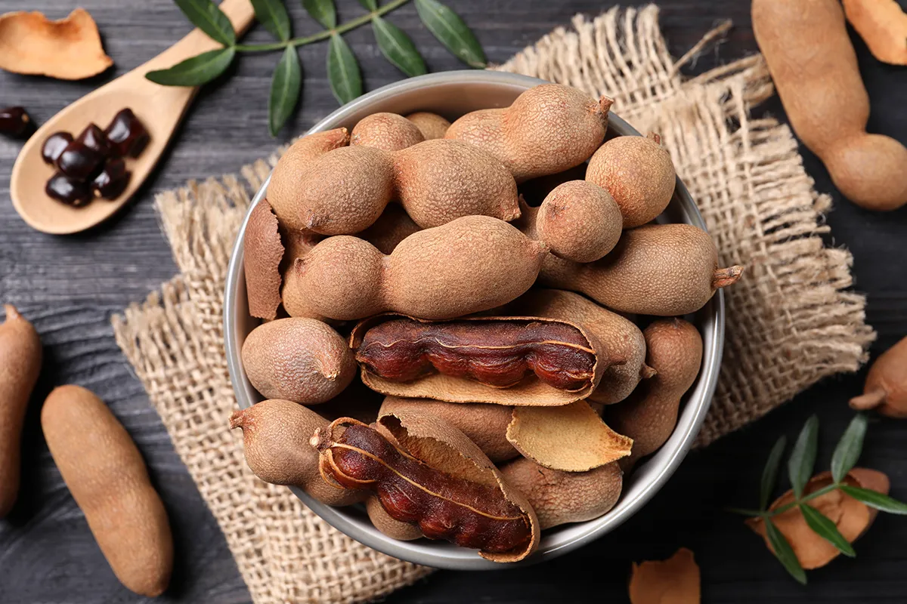
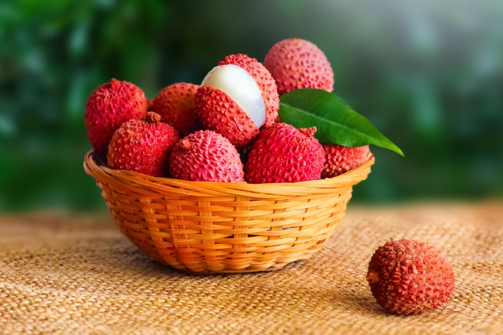

Le nostre offerte primaverili!!!

Acquista 2,15€/Kg
Lime
Il lime è un agrume, facente parte del genere Citrus. In
Italia, è conosciuto anche con il nome di limetta e sembra possa derivare
dall’incrocio (ibrido) del cedro e del limone. La forma del frutto è sferica e viene
raccolto da luglio a ottobre circa, quando ancora la buccia è di un color verde
brillante. Se lasciato sull’albero il frutto assume una colorazione gialla, con
sfumature arancioni. Il gusto è aspro e l’acidità può variare in base alla cultivar.
Ad esempio, la varietà la vallette ha un gusto intenso, ma più dolce rispetto ad
altre tipologie.
Il lime e il limone sono la stessa cosa? Se no, quali sono le differenze tra i due
tipi di agrume? Se vi state ponendo queste domande, siamo pronti a rispondervi. A
livello estetico il lime è più piccolo ed è verde, mentre il limone ha dimensioni
maggiori e si presenta generalmente sulle tonalità del giallo. Inoltre, il lime ha
un maggior contenuto di vitamina A e un succo più acidulo. Il limone, invece,
contiene più vitamina C e più proteine.
| Lime, valori per 100g | |
|---|---|
| Energia | 30,3kcal |
| Fibre | 2,8g |
| Carboidrati | 7,1g |
| Grassi | 0,1g |
| Proteine | 0,7g |
| Acqua | 88,3g |
Acquista 2,15€/Kg

Acquista 6,30€/kg
Tamarindo
Il tamarindo - Tamarindus indica, famiglia Leguminose
Cesalpiniacee - è un albero sempreverde tipico dell' Africa tropicale, ma coltivato
anche in India ed in America. Alto fino a 25 metri, è noto sin dall'antichità per i
suoi legumi di color bruno chiaro, simili alle carrube. TamarindoQuesti frutti
pendenti, più o meno appiattiti e con protuberanze in corrispondenza dei semi,
racchiudono del materiale fibroso ed una polpa soffice, acidula e giallastra.
La polpa dei frutti di tamarindo vanta un aroma caratteristico e un sapore
gradevole; per questo, viene utilizzata nella preparazione di succhi e bibite
rinfrescanti.
A dosi più levate è nota per essere un'efficace lassativo naturale, che deve le sue
proprietà alla ricchezza di acidi organici, zuccheri e sostanze mucillaginose.
Le popolazioni del deserto usano masticare le foglie per combattere la sete.
| Tamarindo, valori per 100g | |
|---|---|
| Energia | 239kcal |
| Fibre | 5,1g |
| Carboidrati | 62,50g |
| Grassi | 0,60g |
| Proteine | 2,8g |
| Acqua | 45,56g |
Acquista 6,30€/kg

Acquista 11,52€/kg
Litchi
Litchi, scritto anche lychee in inglese, liechee, liche,
lizhi o li zhi o lichee, è il frutto dell'omonima pianta esotica appartenente alla
Famiglia Sapindaceae, Genere Litchi e specie chinensis.
I litchi sono coltivati estensivamente in Cina, India, Tailandia, Vietnam e nel
resto del sud-est asiatico tropicale, nel subcontinente indiano e, più recentemente,
in Sud Africa, Brasile, Caraibi, Australia e Stati Uniti.
La pianta di litchi richiede un clima tropicale con temperature non inferiori a -4 °
C. La crescita è ottimale su suoli ben drenati, leggermente acidi, ricchi di
sostanza organica.
È disponibile un'ampia gamma di cultivar, con tipi a maturazione precoce e tardiva,
adatte rispettivamente a climi più caldi e più freschi.
| Litchi, valori per 100g | |
|---|---|
| Energia | 66kcal |
| Fibre | 1,38g |
| Carboidrati | 16,53g |
| Grassi | 0,44g |
| Proteine | 0,8g |
| Acqua | 81,76g |
Acquista 11,52€/kg